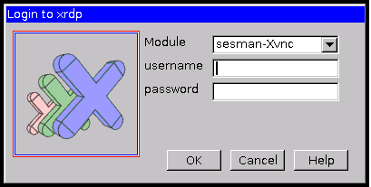

This page describes how to configure your VSA backend for the Helion Entry-scale with KVM Cloud model. It consists of the following steps:
Prerequisites
- The Entry-scale KVM with VSA cloud model should be deployed. For more details on the installation refer to the Entry-scale with KVM installation instructions.
- It's important that all of your systems have the correct date/time because the Vertica license has a start date. If the start date is later than the system time then the installation will fail.
- Collect the IP addresses of the VSA virtual machines and cluster virtual IP addresses allocated from the ~/scratch/ansible/next/my_cloud/stage/info/net_info.yml file. This file is generated as part of output of the Configuration Processor during installation. You need these IP address to discover deployed VSA servers and to create the storage clusters.
Notes
The license for the StoreVirtual VSA license is bundled with HPE Helion OpenStack and comes with a free trial which allows a maximum limit of 50 TB per node. Hence the total amount of the configured storage on an individual StoreVirtual node should not exceed 50 TB. To extend the 50 TB per node limit, you can add nodes. A VSA cluster can support up to 16 nodes, which means configured storage on a VSA cluster can be as much as 800 TB.
Create Your VSA Cluster using the CMC Utility
Creating your VSA cluster consists of the following steps:
Launching the CMC utility GUI
The CMC utility requires a GUI to access it. You can use either of the following methods to launch the CMC GUI.
- RDP/VNC connect
- Any X Display Tool
RDP/VNC connect method
Setup the Local Firewall
If you are going to use this method you will need to open up ports 5900-5905 in your HP Helion OpenStack firewall to ensure this traffic is allowed. These steps walk you through this process:
- Log in to your lifecycle-manager node.
- Edit your ~/helion/my_cloud/definition/data/firewall_rules.yml file and
add the lines below to ensure the VNC ports are allowed through the firewall:
- name: VNC network-groups: - MANAGEMENT rules: - type: allow remote-ip-prefix: 0.0.0.0/0 port-range-min: 5900 port-range-max: 5905 protocol: tcpNote: The example above shows a remote-ip-prefix of 0.0.0.0/0 which opens the ports up to all IP ranges. To be more secure you can specify your local IP address CIDR you will be running the VNC connect from. - Commit those changes to your local git:
cd ~/helion/hos/ansible git add -A git commit -m "firewall rule update"
- Run the Configuration Processor:
cd ~/helion/hos/ansible ansible-playbook -i hosts/localhost config-processor-run.yml
- Create the deployment directory structure:
cd ~/helion/hos/ansible ansible-playbook -i hosts/localhost ready-deployment.yml
- Change to the deployment directory and run the
osconfig-iptables-deploy.yml playbook to update your iptable rules to
allow VNC:
cd ~/scratch/ansible/next/hos/ansible ansible-playbook -i hosts/verb_hosts osconfig-iptables-deploy.yml
Setup VNC connect on the Controller Node
The following steps will allow you to setup a VNC connect to your controller node so you can view the GUI.
- Log in to your first controller node.
- Run the following command to install the package that is required to launch CMC:
sudo apt-get install -y xrdp
- Start vnc4server using the instructions below. You will be prompted for
a password (min 6 characters). Enter a password and proceed. A sample output is shown
below:
stack@helion-cp1-c1-m1-mgmt:~$ vnc4server You will require a password to access your desktops. Password: Verify: xauth: file /home/stack/.Xauthority does not exist New 'helion-cp1-c1-m1-mgmt:3 (stack)' desktop is helion-cp1-c1-m1-mgmt:3 Creating default startup script /home/stack/.vnc/xstartup Starting applications specified in /home/stack/.vnc/xstartup Log file is /home/stack/.vnc/helion-cp1-c1-m1-mgmt:3.logNote: If you directly use xrdp to connect to the first controller node without using the VNC server then a remote session is created whenever you login. To avoid this, a dedicated VNC server instance is launched and connected to that instance by xrdp. This helps to maintain the session. - Run netstat -anp | grep vnc to determine the public port that VNC is
using. In the example below, the port is 5903:
stack@helion-cp1-c1-m1-mgmt:~$ netstat -anp | grep vnc (Not all processes could be identified, non-owned process info will not be shown, you would have to be root to see it all.) tcp 0 0 0.0.0.0:6003 0.0.0.0:* LISTEN 1413/Xvnc4 tcp6 0 0 :::5903 :::* LISTEN 1413/Xvnc4
Note: If you reboot the controller node then you must repeat the steps 3 and 4. - Connect to your controller node through any remote desktop or VNC client. We will show
the xrdp method first and the VNC method is below it:
- Connecting through remote desktop client
- Login to your remote desktop. You will be prompted with xrdp login screen.

- Click the Module drop-down list and select vnc-any.
- Enter the IP address, port and password in the respective fields.
- Click Ok.
- Login to your remote desktop. You will be prompted with xrdp login screen.
- Connecting through a VNC client, such as VNC
Viewer:
- Enter the IP address and port and click Connect. You will be prompted for
your password once the connection is established.

- Enter the IP address and port and click Connect. You will be prompted for
your password once the connection is established.
- Connecting through remote desktop client
- Download and install Xming on a Windows machine that can access the lifecycle-manager node. You can download Xming from Sourceforge.net.
- Select Enable X11 forwarding checkbox on the PuTTy session for
deployer/lifecycle-manager node. You can do this in PuTTY by:
- Navigate to the Connection -> SSH -> X11 option in PuTTy
- Click the Enable X11 forwarding box to ensure it has a checkmark in it
- SSH to first control plane node.
ssh -X
and enter the CMC command (as mentioned below) to launch CMC.
Use the CMC utility to create a cluster and add it to the management group
- Run the following command from your first controller node which will open the HP
StoreVirtual Centralized Management Console (CMC) GUI on your local machine:
/opt/HP/StoreVirtual/UI/jre/bin/java -jar /opt/HP/StoreVirtual/UI/UI.jar
By default, the CMC GUI is configured to discover the StoreVirtual nodes in the subnet in which it is installed. This discovery functionality of VSA nodes using the CMC controller node is not supported in HPE Helion OpenStack. Instead, you must manually add each VSA node, as shown below.
- In the CMC GUI, click the Find menu and then select the Find Systems options.
- Click the Add button which will open the Enter IP Address dialogue box where you can enter the IP address of your VSA nodes which you noted earlier from your ~/scratch/ansible/next/my_cloud/stage/info/net_info.yml file.
- Once you have all of your VSA nodes entered, click the Close button.
- Next click the Tasks menu and then navigate to the Management Group submenu and select the New Management Group option.
- In the Management Group wizard, click Next and then select New Management Group and then Next again to continue.
- Enter a name in the New Management Group Name field and then click Next.
- On the Add Administrative User you will enter a username and password you will
use to administer the CMC utility. Important: You will need to remember these values as you will input them into your cinder.conf.j2 file later.
- Click Next to display the Management Group Time page.
- Add your NTP server information and click Next
- Skip the DNS and SMTP sections. To do so, click Next and a popup will display where you can choose the Accept Incomplete option. Repeat this to skip SMTP section as well.
- On the Create a Cluster options, select Standard Cluster from the displayed options and click Next.
- In the Cluster Name field, enter a name for the cluster and click Next.
- On the Assign Virtual IPs and Subnet Masks page, click Add and enter the
virtual IP address and subnet mask of the cluster in the respective boxes and click
OK. Note: The virtual IP address will be found as the cluster_ip value in your ~/scratch/ansible/next/my_cloud/stage/info/net_info.yml file and your subnet mask will be the subnet address from the network your VSA nodes are attached to, usually your MANAGEMENT network.
- The CMC utility will verify the virtual IP address information and then you can click the Next button.
- Select the checkbox for Skip Volume Creation and click the Finish button
which will display your VSA management cluster.
Attention: You may get a pop-up notice telling you that your hostnames are not unique. This can be ignored by clicking the OK button.
- If this process is successful you will see a summary page at the end which outlines what you have completed.
Configure VSA as the Backend
You will use the information you input to the CMC utility to configure your Cinder backend to use your VSA environment.
To update your Cinder configuration to add VSA storage you must modify the ~/helion/my_cloud/config/cinder/cinder.conf.j2 file on your lifecycle-manager node as follows:
- Log in to the lifecycle-manager node.
- Make the following changes to the
~/helion/my_cloud/config/cinder/cinder.conf.j2 file:
- Add your VSA backend to the enabled_backends section:
# Configure the enabled backends enabled_backends=vsa-1
- [OPTIONAL] If you want a use a default volume type, then enter it in the
[DEFAULT] section with the syntax below. You will want to remember
this value when you create your volume type in the next section.
[DEFAULT] # Set the default volume type default_volume_type = <your new volume type>
- Uncomment the StoreVirtual (VSA) cluster section and fill the
values as per your cluster information. If you have more than one cluster, you will
need to add another similar section with its respective values. In the following
example only one cluster is added.
[vsa-1] hplefthand_password: <vsa-cluster-password> hplefthand_clustername: <vsa-cluster-name> hplefthand_api_url: https://<vsa-cluster-vip>:8081/lhos hplefthand_username: <vsa-cluster-username> hplefthand_iscsi_chap_enabled: false volume_backend_name: <vsa-backend-name> volume_driver: cinder.volume.drivers.san.hp.hp_lefthand_iscsi.HPLeftHandISCSIDriver hplefthand_debug: false
where:
Value Description hplefthand_password Password entered during cluster creation in the CMC utility. If you have chosen to encrypt this password, enter the value in this format: hplefthand_password: {{ '<encrypted vsa-cluster-password>' | hos_user_password_decrypt }}See Encryption of Passwords and Sensitive Data for more details.
hplefthand_clustername Name of the VSA cluster provided while creating a cluster in the CMC utility. hplefthand_api_url Virtual IP address of your VSA cluster, found in your ~/scratch/ansible/next/my_cloud/stage/info/net_info.yml file. hplefthand_username Username given during cluster creation in the CMC utility. hplefthand_iscsi_chap_enabled If you set this option as true then the hosts will not be able to access the storage without the generated secrets. And if you set this option as false then no CHAP authentication is required for the ISCSI connection. volume_backend_name Name given to the VSA backend. You will specify this value later in the Associate the Volume Type to a Backend steps. volume_driver Cinder volume driver. Leave this as the default value for VSA. hplefthand_debug If you set this option as true then the Cinder driver for the VSA will generate logging in debug mode; these logging entries can be found in cinder-volume.log. [OPTIONAL] HPE Helion OpenStack 2.0 supports VSA deployment for KVM hypervisor only but it can be used as pre-deployed (or out of the band deployed) Lefthand storage boxes or VSA appliances (running on ESX/hyper-v/KVM hypervisor). It also supports Cinder configuration of physical Lefthand storage device and VSA appliances. Depending upon your setup, you will have to edit the below section if your StoreVirtual Storage array is running LeftHand OS lower than version 11:
[<unique-section-name>] volume_driver=cinder.volume.drivers.san.hp.hp_lefthand_iscsi.HPLeftHandISCSIDriver volume_backend_name=lefthand-cliq san_ip=<san-ip> san_login=<san_username> If adding a password here, then the password can be encrypted using the mechanism specified in the documentation. If the password has been encrypted add the value and the hos_user_password_decrypt filter like so: san_password= {{ '<encrypted san_password>' | hos_user_password_decrypt }} Note that the encrypted value has to be enclosed in quotes If you choose not to encrypt the password then the unencrypted password must be set as follows: san_password=<san_password> san_ssh_port=16022 san_clustername=<vsa-cluster-name> volume_backend_name=<vsa-backend-name>Attention: Similar to your hplefthand_password in the previous example, encryption for your san_password is supported. If you chose to use encryption you would use the syntax below to express that:san_password= {{ '<encrypted san_password>' | hos_user_password_decrypt }}See Encryption of Passwords and Sensitive Data for more details.
- Add your VSA backend to the enabled_backends section:
- Commit your configuration to a local repository:
cd ~/helion/hos/ansible git add -A git commit -m "<your commit message>"
Note: Before you run any playbooks, remember that you need to export the encryption key in the following environment variable: export HOS_USER_PASSWORD_ENCRYPT_KEY=<encryption key> See HPE Helion OpenStack 2.0: Installation for Helion Entry-scale Cloud with KVM for reference. - Run the configuration processor:
cd ~/helion/hos/ansible ansible-playbook -i hosts/localhost config-processor-run.yml
- Run the following command to create a deployment
directory:
cd ~/helion/hos/ansible ansible-playbook -i hosts/localhost ready-deployment.yml
- Run the Cinder Reconfigure Playbook:
cd ~/scratch/ansible/next/hos/ansible ansible-playbook -i hosts/verb_hosts cinder-reconfigure.yml
VSA with AO or without AO
VSA may be deployed with adaptive optimization (AO) or without AO. AO allows built-in storage tiering for VSA. While deploying VSA with or without AO you must ensure to use the appropriate disk input model.
Additional disks can be added if available
device_groups:
- name: vsa-data
consumer:
name: vsa
usage: data
devices:
- name: /dev/sdc
- name: /dev/sdd
- name: /dev/sde
- name: /dev/sdf
- name: vsa-cache
consumer:
name: vsa
usage: adaptive-optimization
devices:
- name: /dev/sdb
Additional disks can be added if available
device_groups:
- name: vsa-data
consumer:
name: vsa
usage: data
devices:
- name: /dev/sdc
- name: /dev/sdd
- name: /dev/sde
- name: /dev/sdf
Create a Volume Type for your Volumes
The default volume type created by VSA will be thin provisioned and will have no fault tolerance (RAID 0). You should configure cinder to fully provision volumes, and you may want to configure fault tolerance. Follow the instructions below to create a new volume type which is fully provisioned and fault tolerant:
- Log into the Horizon dashboard. See Accessing Horizon for details.
- Ensure that you are scoped to your admin Project. Then under the Admin menu in the navigation pane, click on Volumes under the System subheading.
- Select the Volume Types tab and then click the Create Volume Type button to display a dialog box.
- Enter a unique name for the volume type and then click the Create Volume Type button to complete the action.
The newly created volume type will be displayed in the Volume Types list confirming its creation.
Extra Specifications Options
VSA supports volumes creation with varying attributes like thin provisioning enable, raid type, AO enabled volume etc. All these attributes can be specified using extra spec of volume type. Admin is expected to define appropriate extra spec for VSA volume type as per the guidelines provided at http://docs.openstack.org/kilo/config-reference/content/hp-lefthand-supported-ops-rest.html.
The following Cinder Volume Type extra-specs options enable control over the VSA storage provisioning type (thin or full) and specify protection for backend volumes:
hplh:provisioning thin or full hplh:data_pl r-0 or r-5 or r-10-2 or r-10-3 or r-10-4 or r-6
For example:
hplh:provisioning thin hplh:data_pl r-5 volume_backend_name MyVolumeBackend
The protection level options enable different data protection configurations. Supported data protection options are:
- r-0 (RAID 0) provides the best data capacity and processing performance, but offers no data protection (no fault tolerance) in the event of a failure.
- r-5 (RAID 5) consists of three or more physical disk drives in an array. Stores parity data across all drives. If one drive fails, the remaining drives use the parity data to allow the array to continue to operate until the failed drive is replaced. If more than one drive fails, the array fails.
- r-10-2 (RAID 10+2) stripes and mirrors data across four or more disks.
- r-10-3 (RAID 10+3) stripes and mirrors data across five or more disks.
- r-10-4 RAID 10+4) stripes and mirrors data across six or more disks.
- r-6 (RAID 6) is based on and extends RAID5. It requires a minimum of four drives and creates multiple parity sets such that the array can function with up to two drives failing at the same time.
Associate the Volume Type to the Backend
After the volume type names have been created, you can assign extra_specs to the volumes types.
- Log into the Horizon dashboard. See Accessing Horizon for details.
- Ensure that you are scoped to your admin Project. Then under the Admin menu in the navigation pane, click on Volumes under the System subheading.
- Click the Volume Type tab to list the volume types.
- In the Actions column of the Volume Type you created earlier, click the drop-down option and select View Extra Specs which will bring up the Volume Type Extra Specs options.
- Click the Create button on the Volume Type Extra Specs screen.

- In the Key field, enter volume_backend_name. In the Value box, enter the name of the backend to which you want to associate the volume type, which you also specified earlier in the cinder.conf.j2 file. Once you have completed that, click the Create button to create the extra volume type specs.
Once the volume type is mapped to the backend, you can create volumes with this volume type.
Verifying your VSA backend
After you have configured VSA as your Block Storage backend, you can verify this all completed successfully by creating a new volume.
See Verifying your Installation for more details.